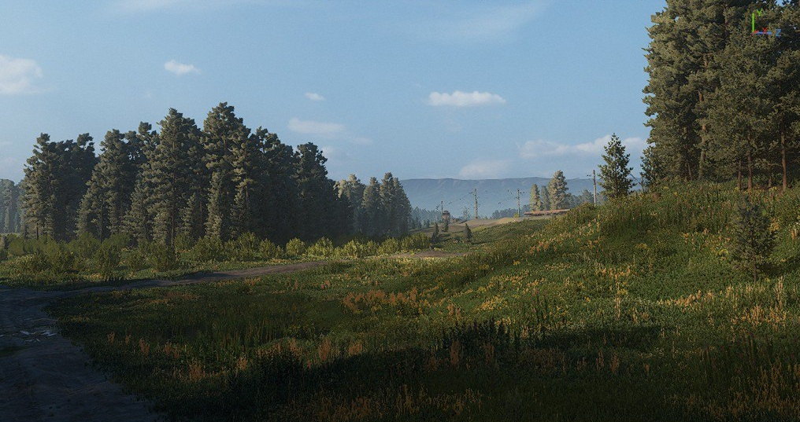
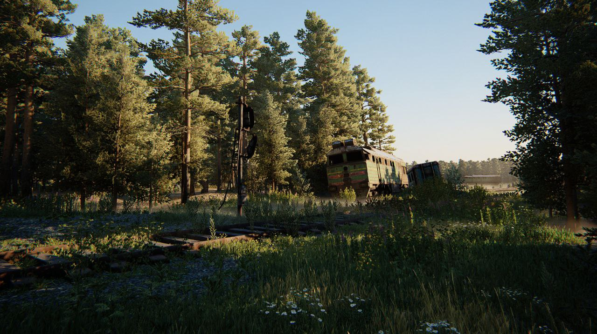

01
The Project
A PvPvE extraction shooter where 20 players drop into a 2×2 km open-world map in vehicles, loot points of interest, and extract valuable cargo — all while competing against other players and AI threats. The game combined vehicular traversal, third-person combat, and high-stakes extraction loops.
I was the only level designer on the project, responsible for the entire 4 km² world: terrain, biome systems, road network, POI placement, danger zones, navigation, and gameplay metrics.
4 km²
Total map area
(2×2 km)
300–400m
POI spacing
(honeycomb grid)
1
Level designer
(solo ownership)
02
Procedural Biome System
The world was built on a procedural terrain generation system, which meant that before building the actual map, I first needed to design the biome ruleset — defining what each biome contains, how it behaves, and what gameplay role it serves.
Challenge
Procedural generation can produce a world that looks varied but plays flat. Every biome needed a distinct gameplay identity — not just visual difference, but meaningful impact on traversal, combat range, risk/reward, and vehicle handling.
I defined each biome as a complete gameplay system: terrain type, vegetation density, road availability, vehicle passability, sight line distances, and encounter pacing. These rules fed into the procedural system and ensured that generated worlds were always playable, readable, and strategically varied.
🌲
Dense Forest
Concealment · Short sight lines
Tight canopy, limited vehicle access. Forces dismounted combat. High concealment for ambushes. Reduced traversal speed. Defined tree density metrics and canopy coverage rules.
🌾
Open Fields
High speed · High exposure
Fast vehicle traversal but maximum exposure. Long sight lines create sniper risk. Defined minimum field sizes to ensure meaningful open-ground crossings.
💧
Rivers & Swamps
Natural barriers · High-value loot
Difficult terrain for vehicles — slow, risky, but rewarding. Swamps hold valuable loot as compensation for traversal cost. Rivers act as natural lane dividers.
🏘️
Settlements & Infrastructure
POI clusters · Close-quarters combat
Villages, towns, and industrial sites. Tight spaces mixed with road access. High loot density paired with AI presence. Recreated from real-world landmarks, adapted for gameplay.

World overview showing biome variety — forests, open fields, river crossings, and settlement infrastructure across the 2×2 km map.
03
POI Distribution: The Honeycomb System
For an extraction game, POI placement is everything. It determines where players go, where encounters happen, how long sessions last, and whether the map feels alive or empty. I designed a distribution system I called the "honeycomb grid".
The Honeycomb Approach
Points of interest are distributed in a hex-like pattern with 300–400 meter spacing between each POI. Each POI has a core zone (the loot site itself) surrounded by a perimeter ring with visual cues and approach hints — readable from a vehicle at speed. The space between POIs is traversal territory: open enough to move, dangerous enough to stay alert.
-
1
POI perimeter (outer ring) — Visual landmarks and environmental cues visible from 200+ meters. Smoke columns, damaged structures, road signs. Players can spot a POI from the road and decide whether to approach.
-
2
POI core (inner zone) — The loot site itself. Tight spaces, cover, AI presence. Requires dismounting or careful vehicle positioning. This is where combat happens.
-
3
Inter-POI space (300–400m gaps) — Traversal zones with minimal cover. Players are exposed while moving between POIs, creating tension and ambush opportunities for PvP encounters.
[ Diagram: honeycomb POI distribution with danger gradient overlay ]
Honeycomb POI grid with danger gradient — outer edges are safer with lower-tier loot, center is high-risk / high-reward. POI spacing ensures constant tension during traversal.
Danger Gradient: Edge to Center
The entire map follows a center-to-edge danger gradient. Spawn and extraction points are at the map edges — relatively safe, with lower-value loot. As players drive toward the center, AI density increases, loot quality scales up, and the likelihood of PvP encounters rises as paths converge.
This creates a natural risk/reward curve that structures every session: safe runs stay on the edges, greedy runs push to the center, and the best loot requires the most exposure.
04
Road Network & Infrastructure
In a vehicular extraction game, roads are the circulatory system of the world. I designed a multi-tier road network that creates meaningful traversal decisions:
-
1
Paved roads — Fast, well-connected, but exposed and predictable. Other players can camp these routes. Best for speed but highest ambush risk.
-
2
Dirt roads — Slower but less trafficked. Wind through forests and between settlements. Offer a balance between speed and concealment.
-
3
Railway lines — Industrial infrastructure. Can be followed as navigation aids, pass through high-value industrial POIs, but constrain vehicle movement to narrow corridors.
-
4
Off-road / no road — Cross-country through fields, forests, or swamps. Maximum freedom, minimum speed. Risk of getting stuck in difficult terrain. Rewarded with access to hidden POIs.
Design Insight
Road choice is a micro-strategy decision players make constantly. Paved road to the center is fast but you'll be spotted. Dirt road through the forest is slower but you arrive undetected. Swamp shortcut might get you stuck — but there's rare loot along the way. Every meter of road was placed to create these moments.

Multi-tier road infrastructure — paved highways connecting major settlements, dirt roads threading through forests, and off-road terrain as risky shortcuts.
05
Navigation & Player Orientation
A 2×2 km map is large enough that players can get lost — especially under pressure. I used two complementary navigation systems:
Macro Navigation: Landmarks
Real-world-inspired landmarks adapted for gameplay — visible from across the map, they serve as orientation anchors. A factory chimney, a radio tower, a church steeple, a water tower. Players learn to navigate by landmark recognition, creating a sense of place and spatial memory that deepens with every session.
Micro Navigation: Environmental Cues
At ground level, I placed environmental breadcrumbs that guide players toward POIs without HUD markers: tire tracks leading to a loot site, smoke rising from a camp, power lines following a road, damaged fences near a combat zone. These cues feel organic and reward attentive players.
[ Screenshot: landmark visible from distance ]
Landmark navigation — distinctive structures visible across the map help players orient without a minimap.
[ Screenshot: environmental cue near a POI ]
Environmental cues — visual hints like smoke, damaged structures, or tire tracks signal nearby points of interest.
06
AI Encounters & Danger Zones
The PvE layer serves two purposes: it provides consistent content for solo or quiet sessions, and it acts as a noise generator — gunfire from AI fights attracts other players, creating organic PvP encounters.
-
1
Edge zones (low threat) — Sparse AI patrols near spawn/extraction areas. Low-tier loot. Designed as a "warm-up" zone where players gear up before pushing deeper.
-
2
Mid zones (moderate threat) — Regular AI presence around secondary POIs. Mid-tier loot. Enough danger to slow players down and force tactical decisions.
-
3
Center zones (high threat) — Dense AI, elite enemies, and the best loot. Multiple players converge here, making PvPvE engagements the norm. The sound of combat acts as a beacon.
Emergent PvPvE
The danger gradient isn't just about difficulty scaling — it's a player funneling system. By concentrating high-value loot and strong AI at the center, the map naturally pushes players into proximity. PvP encounters aren't random — they're architecturally inevitable in the most rewarding areas of the map.
07
Gameplay Metrics
I established a metrics framework that governed every spatial decision in the world:
-
→
POI spacing: 300–400m between adjacent points of interest — close enough to chain visits, far enough for meaningful traversal risk.
-
→
Open zone sizes: Defined minimum dimensions for open fields (exposure zones) to prevent players from crossing without risk.
-
→
Forest density: Tree spacing, canopy coverage, and undergrowth density tuned per forest type — balancing vehicle passability against concealment value.
-
→
AI density: Enemies per zone calibrated to the danger gradient — scaling from edge to center across 3 tiers.
-
→
Traversal times: Estimated drive times between spawn → edge POI → mid POI → center, ensuring session pacing supported the extraction loop timing.
08
Key Takeaways
-
→
Biomes are gameplay systems, not art categories. Every biome needed to change how you play — not just how the world looks. Vehicle handling, combat range, loot access, and AI behavior all shift with the terrain.
-
→
POI distribution drives session structure. The honeycomb system ensured players always had a "next destination" within sight, while the gaps between POIs created the tension that makes extraction games compelling.
-
→
Roads are decisions, not just paths. In a vehicular game, the road network is the player's most frequent strategic choice. Every road type offered a different risk/speed/visibility trade-off.
-
→
Design for the procedural system, not just the map. When terrain is generated, you design rules and metrics — not individual placements. Getting the system right means every generated world plays well, not just the one you hand-tuned.